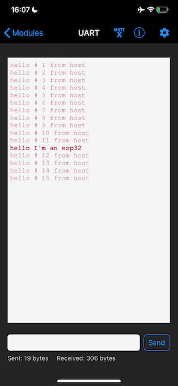
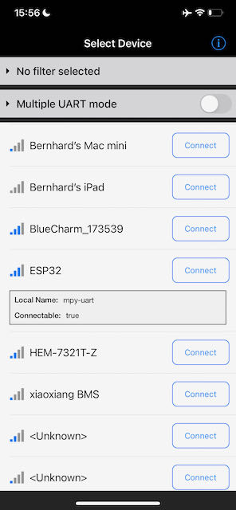

BLE UART - esp32
BLE UART - esp32#
The UART service simulates a serial connection (for short packets) over Bluetooth LE. Below is an example that advertises its name (mpy-uart). Once connected it sends out hello messages to the peer. Received messages are printed. After a disconnect, the program resumes advertising.
%connect ble
%rsync
Connected to ble @ serial:///dev/ttyUSB0
Directories match
import bluetooth
import random
import struct
import time
from ble_advertising import advertising_payload
from micropython import const
_IRQ_CENTRAL_CONNECT = const(1)
_IRQ_CENTRAL_DISCONNECT = const(2)
_IRQ_GATTS_WRITE = const(3)
_FLAG_READ = const(0x0002)
_FLAG_WRITE_NO_RESPONSE = const(0x0004)
_FLAG_WRITE = const(0x0008)
_FLAG_NOTIFY = const(0x0010)
_UART_UUID = bluetooth.UUID("6E400001-B5A3-F393-E0A9-E50E24DCCA9E")
_UART_TX = (
bluetooth.UUID("6E400003-B5A3-F393-E0A9-E50E24DCCA9E"),
_FLAG_READ | _FLAG_NOTIFY,
)
_UART_RX = (
bluetooth.UUID("6E400002-B5A3-F393-E0A9-E50E24DCCA9E"),
_FLAG_WRITE | _FLAG_WRITE_NO_RESPONSE,
)
_UART_SERVICE = (
_UART_UUID,
(_UART_TX, _UART_RX),
)
# org.bluetooth.characteristic.gap.appearance.xml
_ADV_APPEARANCE_GENERIC_COMPUTER = const(128)
class BLE_UART:
def __init__(self, rx_cb, central_name="mpy-uart"):
self._ble = bluetooth.BLE()
self._ble.active(True)
self._ble.irq(self._irq)
((self._handle_tx, self._handle_rx),) = self._ble.gatts_register_services((_UART_SERVICE,))
self._connections = set()
self._rx_cb = rx_cb
self._payload = advertising_payload(name=central_name, services=[_ADV_APPEARANCE_GENERIC_COMPUTER])
# Optionally add services=[_UART_UUID], but this is likely to make the payload too large.
# self._payload = advertising_payload(name=central_name, services=[_UART_UUID])
self._advertise()
def _irq(self, event, data):
# Track connections so we can send notifications.
if event == _IRQ_CENTRAL_CONNECT:
conn_handle, _, _ = data
self._connections.add(conn_handle)
print("Connected")
elif event == _IRQ_CENTRAL_DISCONNECT:
conn_handle, _, _ = data
self._connections.remove(conn_handle)
# Start advertising again to allow a new connection.
print("Disconnected, restart advertising")
self._advertise()
elif event == _IRQ_GATTS_WRITE:
conn_handle, value_handle = data
value = self._ble.gatts_read(value_handle)
if value_handle == self._handle_rx and self._rx_cb:
self._rx_cb(value)
def send(self, data):
for conn_handle in self._connections:
self._ble.gatts_notify(conn_handle, self._handle_tx, data)
def is_connected(self):
return len(self._connections) > 0
def _advertise(self, interval_us=500000):
print("Start advertising")
try:
self._ble.gap_advertise(interval_us, adv_data=self._payload)
except OSError as e:
pass
from time import sleep
def rx_cb(data):
print("esp32 received:", data.decode())
uart = BLE_UART(rx_cb=rx_cb)
n = 1
while True:
if uart.is_connected():
uart.send(f"hello # {n} from esp32")
n += 1
sleep(1)
print("so long ...")
Start advertising
Connected
esp32 received: echo hello # 1 from
esp32 received: echo hello # 2 from
esp32 received: echo hello # 3 from
Disconnected, restart advertising
Start advertising
Interrupted
As a first check, verify operation with the Bluefruit LE Connect app.
Evaluate the preceding cell to start advertising, open the app, and look for the ESP32. Click on this device to verify that the name matches (mpy-uart).
Connect and choose the UART service. You will see the messages sent out by the ESP32. Send one back and verify that it appears (above).
 {kind=link}
{kind=link}
If your host is a Raspberry PI (or other device with a Bluetooth radio), you can also receive these messages on the host. Open the notebook for the UART host service and evaluate all the cells. Drag the notebook toolbar tab to the right, so that you can see both the host and ESP32 notebooks side-by-side.
Make sure the ESP32 UART bluetooth service is running (above), then run the BLE_UART on host (cells below “Receive messages from mpy-uart”).
Note that the BLE UART truncates messages longer than about 35 bytes - a BLE package length limitation. Break long messages up into short chunks.